双白线 · 路块 012
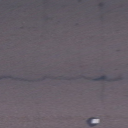
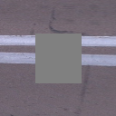
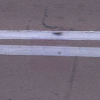
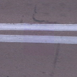
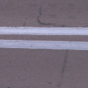
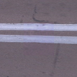
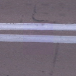
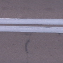
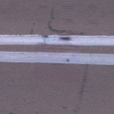
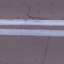
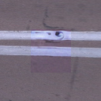
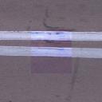
前相机源帧 56，2.56 × 2.56 米，图像为 128 × 128。两组固定噪声可切换，汇总包含两者。
用清晰可见的路面构造伪遮挡，先把图像特征绑定到道路，再比较原生补全与道路 LoRA。固定参考对照的评价误差下降 36.1%，3 / 4 个路块改善。世界融合与二维检索的结果单列，局部色差与标线接缝保留在图中。
完整世界检索通路的后训练误差下降 12.3%，4 / 4 个路块的两次噪声平均改善，但其中仍有单次噪声回退。它的终点误差 0.0232 高于固定参考的 0.0186，当前检索并未自动提高生成质量。直接搬移对照中，简单几何颜色检索也仍略优于世界特征融合。
图中仍有紫色色差、接缝和标线局部偏差，当前画质尚未通过代理图像验收，人工结论保持待评。
首轮保存参考曝光下的外观纹理。RGB 里的照明与阴影仍存在，当前数据尚不能唯一确定反射率、粗糙度等物理材质。原生高斯仅按世界表面点取色，所有材质分支共用几何、透明度、相机和光栅。
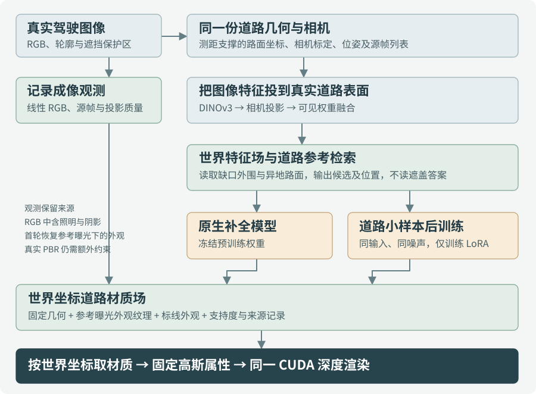












前相机源帧 56，2.56 × 2.56 米，图像为 128 × 128。两组固定噪声可切换，汇总包含两者。

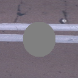
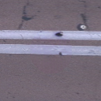
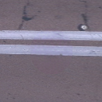
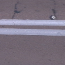
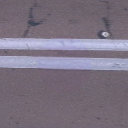
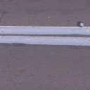
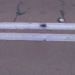
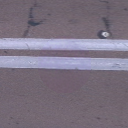
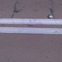
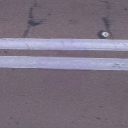
前相机源帧 52，2.56 × 2.56 米，图像为 128 × 128。两组固定噪声可切换，汇总包含两者。
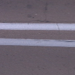
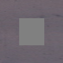
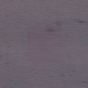
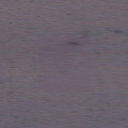
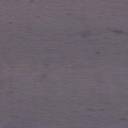
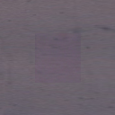
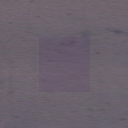
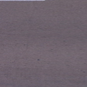
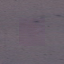
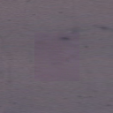
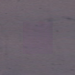
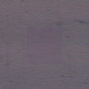
前相机源帧 0，2.56 × 2.56 米，图像为 128 × 128。两组固定噪声可切换，汇总包含两者。

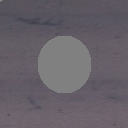
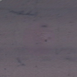
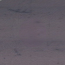
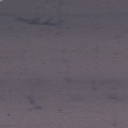
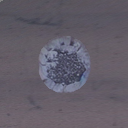
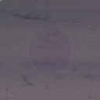
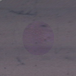
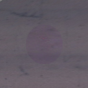
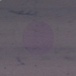
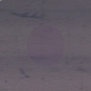
前相机源帧 24，2.56 × 2.56 米，图像为 128 × 128。两组固定噪声可切换，汇总包含两者。
源图只在评分时读回孔洞内答案。参考选择均不读取隐藏区域。保留区域采用共同的已知上下文，孔洞外像素精确保留由该读出约定保证。
| LoRA更新 | 评价RGB MAE ↓ | RMSE ↓ |
|---|---|---|
| 0 | 0.02913 | 0.05280 |
| 200 | 0.02094 | 0.03870 |
| 400 | 0.02049 | 0.03132 |
| 600 | 0.01860 | 0.02665 |
终点预先固定为600。中间模型仅供诊断，未按评价结果选最优模型。
| 检索方式 | 覆盖 | 像素 | MAE ↓ |
|---|---|---|---|
| 几何、颜色与频谱 | 4 / 4 | 10,500 | 0.04688 |
| SuperPoint 二维描述子 | 4 / 4 | 10,500 | 0.05119 |
| DINOv3 二维裁片 | 4 / 4 | 10,500 | 0.06862 |
| DINOv3 世界特征场 | 4 / 4 | 10,500 | 0.05038 |
检索表直接搬移首选路块填孔。C/D使用同一批51帧特征，并另核对共有候选池。它与生成模型的计算预算不同。
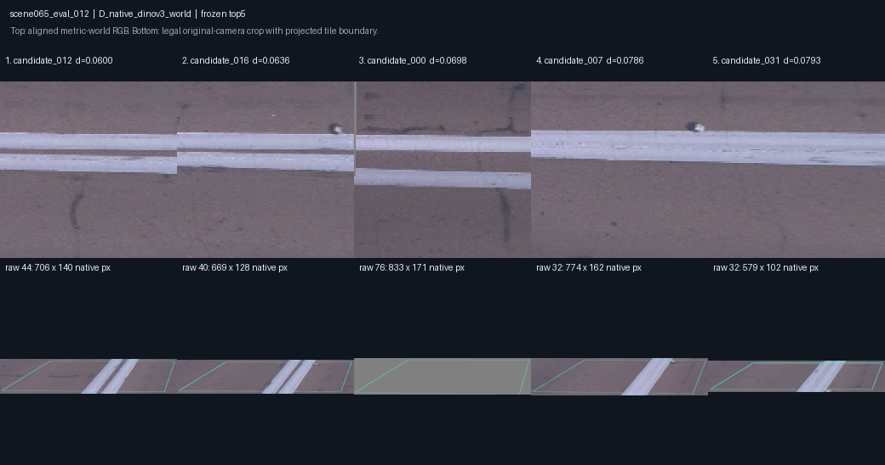
上方是实际清晰候选，下方记录原图来源与已遮蔽的encoder输入。部分来源被保守遮挡为灰色，其贡献权重见完整记录。
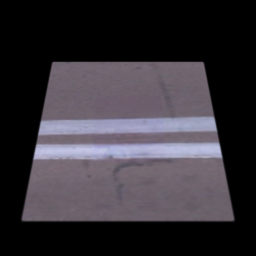
这组图使用同一组16,384个道路高斯，线性RGB在世界坐标取样后转成原生颜色属性。俯视与斜视的CUDA输出均已实际生成，两分支的透明度与深度图逐值相同。float32世界坐标带来的纹理往返误差最大约0.0041（线性RGB），两分支采用同一插值。图示检验路块的表面绑定，完整街段中的车辆残影仍需独立处理。
道路图块为128×128，边长2.56米，世界纹理间距2cm。特征场以4cm格保存，细纹理格共享对应特征格。清晰度准入在划分前统一执行，路块最差投影轴在原图中至少64像素，实际范围 64.5–153.7 像素。12个训练块、4个评价块和44个候选在世界坐标去重，评价中有2块标线。
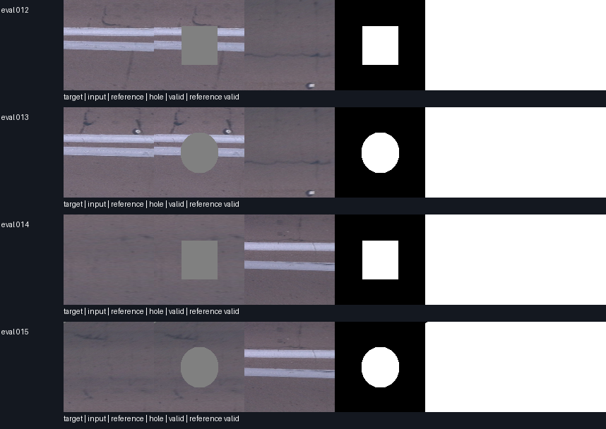
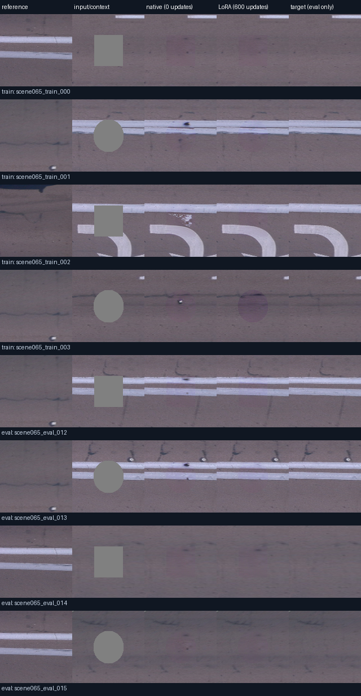
数据准备中拒绝了稀疏缺测条纹和纵向仅3像素的远处路块。特征输入随后修正4cm格与2cm纹理格的遮挡遗漏，以连续世界区域投影遮挡，并独立核对细格中心、四角、内部点和原图双线性邻像素。旧特征结果及旧D参考已作废保留，正式生成训练的图像与固定参考未受该缓存修正影响。
本轮是单街段的小样本空间留出，评价答案来自原本可见道路的平面投影。完整PBR、跨街段泛化、真实车下路面的正确性及车辆删除质量尚未由本试验确认。TRELLIS.2只完成固定网格、归一化及材质接口的探索准备。